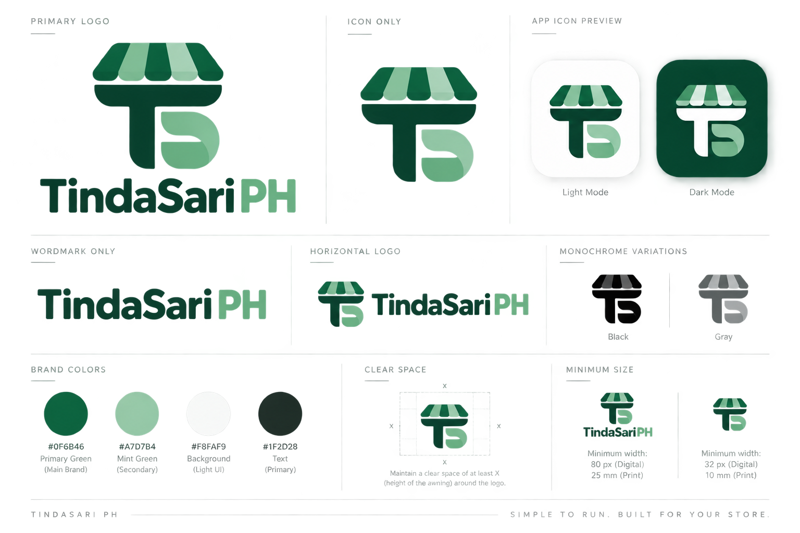

DESIGN REVIEW · NOT YET APPROVEDTindaSari PH
First vector trace of the TS storefront symbol. Compare the awning silhouette, T stem, and S curve with the icon-only panel in the original sheet. The app has not been changed.
Original reference sheet

Clean vector · proposed trace
![Hand-traced TS symbol](data:image/svg+xml;charset=utf-8,%3Csvg%20xmlns%3D%22http%3A%2F%2Fwww.w3.org%2F2000%2Fsvg%22%20width%3D%221024%22%20height%3D%221024%22%20viewBox%3D%22660%2095%20288%20288%22%20role%3D%22img%22%20aria-labelledby%3D%22title%20desc%22%3E%0A%20%20%3Ctitle%20id%3D%22title%22%3ETindaSari%20PH%20%E2%80%94%20TS%20storefront%20trace%20for%20review%3C%2Ftitle%3E%0A%20%20%3Cdesc%20id%3D%22desc%22%3EHand-traced%20vector%20approximation%20of%20the%20supplied%20icon-only%20reference.%20Five%20alternating%20green%20and%20mint%20awning%20panels%20above%20a%20green%20T%20and%20mint%20S.%20Pending%20approval.%3C%2Fdesc%3E%0A%20%20%3Cg%20id%3D%22awning%22%3E%0A%20%20%20%20%3Cpath%20id%3D%22panel-green-left%22%20fill%3D%22%230F6B46%22%20d%3D%22M745%20128H773L754%20179C752%20190%20746%20197%20735%20197H706C695%20197%20688%20191%20693%20180L726%20137C731%20130%20736%20128%20745%20128Z%22%2F%3E%0A%20%20%20%20%3Cpath%20id%3D%22panel-mint-left%22%20fill%3D%22%23A7D7B4%22%20d%3D%22M773%20128H798L789%20180C788%20191%20782%20197%20772%20197H750C739%20197%20736%20191%20739%20181Z%22%2F%3E%0A%20%20%20%20%3Cpath%20id%3D%22panel-green-center%22%20fill%3D%22%230F6B46%22%20d%3D%22M798%20128H819L829%20181C831%20191%20825%20197%20815%20197H794C783%20197%20780%20191%20782%20181Z%22%2F%3E%0A%20%20%20%20%3Cpath%20id%3D%22panel-mint-right%22%20fill%3D%22%23A7D7B4%22%20d%3D%22M819%20128H848L874%20181C879%20191%20874%20197%20863%20197H842C832%20197%20827%20191%20825%20181Z%22%2F%3E%0A%20%20%20%20%3Cpath%20id%3D%22panel-green-right%22%20fill%3D%22%230F6B46%22%20d%3D%22M848%20128H869C878%20128%20882%20131%20887%20137L916%20177C923%20188%20916%20197%20905%20197H883C873%20197%20868%20192%20865%20183Z%22%2F%3E%0A%20%20%3C%2Fg%3E%0A%20%20%3Cpath%20id%3D%22letter-t%22%20fill%3D%22%230F6B46%22%20d%3D%22M696%20202H914C918%20202%20919%20205%20918%20210C915%20230%20902%20239%20881%20240H800V345C800%20349%20798%20351%20793%20351C768%20351%20752%20336%20752%20312V240H730C707%20240%20696%20231%20694%20211C693%20205%20693%20202%20696%20202Z%22%2F%3E%0A%20%20%3Cpath%20id%3D%22letter-s%22%20fill%3D%22%23A7D7B4%22%20d%3D%22M813%20247H850C881%20247%20900%20258%20907%20280C916%20307%20901%20339%20879%20347C873%20350%20865%20351%20857%20351H840C819%20351%20808%20339%20808%20320V303H850C864%20303%20876%20315%20881%20330C886%20317%20878%20302%20865%20296C857%20292%20848%20291%20838%20289C817%20286%20808%20275%20808%20257V252C808%20249%20810%20247%20813%20247Z%22%2F%3E%0A%3C%2Fsvg%3E%0A)
Actual-size checks